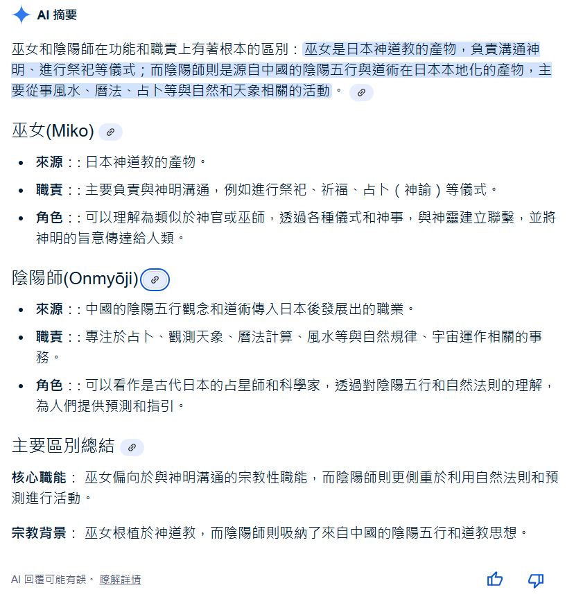
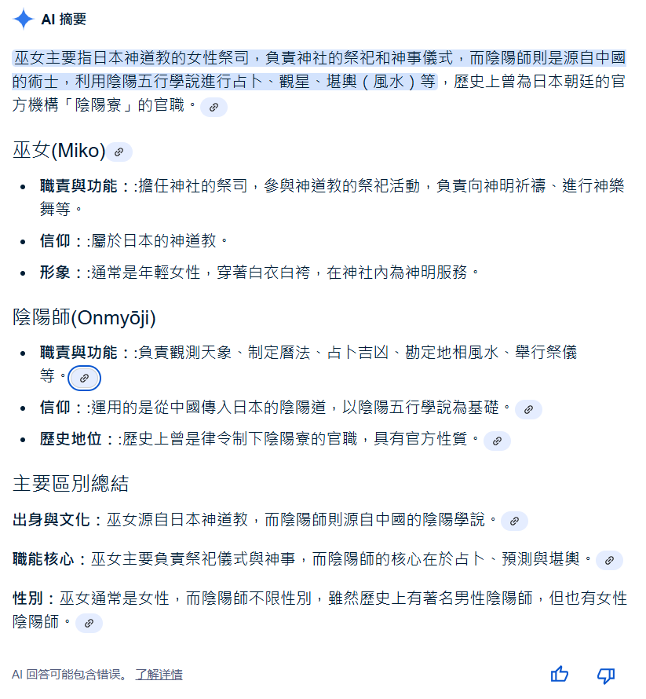

神道與陰陽道：當信仰遇上科學
⚖️ 專案開發者聲明：邏輯一致性審核
本專案並非針對任何特定的宗教或群體，而是針對所有「缺乏物理實相支撐」與「邏輯不通」的信仰系統進行解構。
身為開發者，我們深知一套系統若底層邏輯混亂，無論介面（儀式）多麼華麗，最終都將導致運行錯誤。本專案的宗旨如下：
- 無差別審計：無論是西方的亞伯拉罕諸教、印度的因果業力、歐洲的原始德魯伊，或是東方的神祕主義，皆平等接受科學與邏輯的 Debug。
- 拒絕迷信誤導：迷信本質上是古代樣本在資訊貧乏下所編寫的「邏輯補丁」。在現代科學與腦神經科學已高度發展的今天，繼續沿用這些過時、甚至有害的「舊版代碼」，只會阻礙人類對真實世界的認知。
- 回歸物理實相：我們尊重文學美感與心理撫慰價值，但堅決捍衛「事實歸事實，信仰歸信仰」的界線。不要讓數千年前的資訊謬誤，鎖死了你大腦的運算資源。
「本專案不提供心靈寄託，只提供實相數據。請保持理性，拒絕被任何未經校驗的迷信系統所誤導。」
日本文化中常見的神職角色如巫女、陰陽師等，實際上並非來自相同宗教體系。本文將按照認知順序，從兩者的**定義與區別**切入，解析其對**動漫與特攝流行文化**的深遠塑造，進一步揭開其在歷史演變中的**殘酷爭議與黑歷史**，最終回歸**現代科學實證**進行邏輯審計。
一、 神道與陰陽道的定義與本質區別
許多人常將日本的傳統神祕主義混為一談，但神道與陰陽道在宇宙觀、源流與哲學邏輯上有著根本的差異：
1. 神道（Shinto）：本土萬物有靈信仰
- 定義：日本列島原生的泛靈多神崇拜（Animism）。主張「八百萬神（八百万の神）」，認為山川、巨木、瀑布、狂風乃至人造物皆有神靈（Kami）棲息。
- 核心特徵：不具備開山教主、沒有嚴密的成文教典，核心理念圍繞在「穢（Kegare，污穢）」與「祓（Harae，潔淨）」的儀式維持。
- 底層邏輯問題：若任何自然物存在夠久都能成神或成精，則「神」與「非神」的客觀界線蕩然無存；缺乏普遍倫理道德規約，使得善惡判準高度模糊。
2. 陰陽道（Onmyodo）：外來技術與方術融合體
- 定義：西元五至六世紀由古代中國傳入的陰陽五行思想、天文曆法、易經占卜，與日本本土道教、佛教密宗元素融合而成的咒術與官僚技術體系。
- 核心特徵：律令制下曾設有國家官方機構「陰陽寮」，專門掌管天文觀測、曆法制定、漏刻（計時）以及國家級的風水占卜與方位吉凶。
- 底層矛盾：試圖用五行相生相剋強行套用萬事萬物，將天文氣象觀測與巫術咒語綁定，缺乏可重複檢驗的實證基礎。
二、 巫女 vs 陰陽師：神職體系與虛實對照
很多人誤以為巫女與陰陽師屬於同一個編制，實際上他們來自截然不同的信仰陣營：
- 巫女（神道體系）：神社中的祭祀助理，主要負責神樂舞、祈福、供奉神明與輔助神官淨化神域。她們本質上是神與人溝通的儀式媒介，在傳統神道中並不涉獵咒術、式神或法術戰鬥。
- 陰陽師（陰陽道體系）：身兼古代天文官、占星師、風水師與驅邪術士的多重角色，專精於方位吉凶、占卜、結界與調解鬼神怨念。
❗ 神道 vs 陰陽道：巫女負責維持神域的「純淨」，陰陽師負責調和天地的「陰陽五行與吉凶」。兩者體系完全獨立。


現實中的神職人員 vs 動漫影視的誇飾形象
- 現實中的陰陽師：朝廷或民間的曆法計算與祭祀專家，實務為繁瑣的儀式與算術，並無肉眼可見的超自然法力。
- 創作中的陰陽師：被塑造成手持靈符、口念急急如律令、召喚式神進行華麗能量對決的「東方魔法師」。
- 現實中的巫女：神社日常運作與儀式工作者，多為一般女性神職，並無超能力。
- 創作中的巫女：被賦予破魔之箭、預言未來、超感官知覺與封印強大妖魔的靈媒戰士。
三、 對動漫與流行文化的深遠影響
1. 經典妖怪動漫的文化根源
- 《鬼太郎》：作品中常出現家具、器物化為妖怪（付喪神），精準繼承了神道「萬物有靈」與長久器物具備靈性的世界觀。
- 《犬夜叉》：妖怪多以動物精怪化形為主，融合了中國志怪與陰陽道血統、力量階層的觀念。
- 《鬼神童子》：主角設定為役小角的後代，融合陰陽法術、密宗咒語與神道靈體驅邪。
- 《靈異教師神眉》：將陰陽五行相剋、符咒結界與神道靈異傳說高度結合。
- 《妖怪少爺》：描繪妖怪百鬼夜行與陰陽師花開院家族的對立，展現兩大體系的衝突與融合。
- 《結界師》：純粹展現陰陽道空間封印、方術邏輯與靈力操控的代表作。
2. 《超人力霸王》系列中的妖怪與日本傳統信仰的交集
《超人力霸王系列》不僅是現代科幻特攝的代表，劇中亦頻繁借鑒神道與陰陽道的妖怪神話作為故事原型：
- 巫（雪山怪獸）：登場於《初代》與《衛司》，源自民間雪女與亡靈守護靈信仰，將母親守護子女的執念與暴風雪自然力量融為一體。
- 牛神超獸卡奥拉：登場於《超人力霸王衛司》，源自神道牛神社傳說，因人類盜取牛鼻環觸怒神明，融合了神道神罰與異次元改造概念。
- 恩馬戈：登場於《超人力霸王太郎》，古代被地藏菩薩封印於地下的鎧甲怪獸，因現代工程破壞地藏像而甦醒，反映信仰重疊與破除封印的民俗傳說。
- 莫奇隆（臼怪獸）：登場於《超人力霸王太郎》，結合了月兔搗餅傳說與付喪神概念，將年節文化與器物靈性具象化。
- 宿那鬼：登場於《超人力霸王迪卡》，參考日本古代鬼怪與惡鬼怨靈形象，象徵人類破壞自然所招致的災禍。
- 壬龍：登場於《超人力霸王蓋亞》，古代守護地脈的神獸，因現代都市過度開發切斷地脈而憤怒現身，體現神道中自然神祇對人類科技傲慢的反撲。
- 山童：登場於《超人力霸王高斯》，屬於山地文化與自然精靈崇拜，傳說唯有保有純真之心的人才能看見。
- 怨靈鬼戀鬼：登場於《超人力霸王高斯》，源自陰陽道對死者情念未解、怨念化為惡鬼的詛咒設定。
- 夏之守望：登場於《超人力霸王馬克思》，龍之祠被破壞後覺醒的古代傳說之龍，因少女對環境污染的悲傷思念而狂暴，最終被超人力霸王淨化。
3. 文化辨析：妖怪（Yokai）與怪獸（Kaiju）的差異
妖怪（Yokai）：源自古代民間傳說與神道泛靈論，強調「靈性、變化、情感與象徵性」。應對手段通常帶有民俗與宗教色彩（如撒鹽、符咒、封印祠堂）。
怪獸（Kaiju）：誕生於現代科幻與工業時代，強調「龐大體積、物理破壞力與核輻射/生化異變」（如哥吉拉）。應對手段多為高科技物理武器（如雷射、飛彈、巨型機甲）。
四、 系統除魅：神道教與陰陽道的歷史爭議與黑歷史
在流行文化的唯美包裝之外，神道教與陰陽道在歷史演化中，曾充斥著殘酷的人祭血腥、政治暗殺、封閉反智與意識形態灌輸：
1. 神道教的血腥黑歷史：人柱（Hitobashira）與活人獻祭
- 人柱習俗：古代日本在進行大型水利與築城工程時，遭遇崩塌即視為水神或地靈發怒，神道祭司常將活人（童男童女、奴隸或弱勢平民）活埋於地基深處或投水溺死以平息神怒（如《日本書紀》記載的「茨田堤」人柱）。
- 狩獵殘酷殘留：古老神道祭祀（如諏訪信仰早期）曾長期保留大規模宰殺動物甚至獵取人頭獻神的習俗，直至佛教傳入後才逐漸以木偶或蔬果替代。
- 國家神道的軍國主義浩劫：明治維新至二戰期間，神道教被政府改造為「國家神道」，強制將天皇神化為「現人神」，以此對國民進行軍國主義思想控制，推動侵略戰爭。
2. 陰陽道的政治暗殺與恐慌操弄
- 厭魅與咒殺政爭：平安時代的陰陽師常淪為宮廷權力鬥爭的黑手，使用毛髮、人偶施展「厭魅（Enmi）」咒術與毒物暗殺政敵。
- 怨靈經濟學：陰陽官僚刻意渲染「怨靈作祟」（如菅原道真怨靈），製造全社會恐慌，從中向朝廷索取巨額預算舉辦「御靈會」，建立起以恐懼為核心的利益分贓鏈。
3. 違反認知科學的「口傳秘傳」階級壟斷
- 反對公開記錄：如同歐洲德魯伊嚴禁文字記錄、靠學徒死記硬背二十年以壟斷神權特權，陰陽道家族（安倍家、賀茂家）將天文算術等客觀科學知識包裝成「神賜秘術」，嚴禁寫成公開典籍。這種反智的家族封閉壟斷，導致大量實用的古代天文與工程算術隨家族衰微而徹底失傳。
五、 神道／陰陽道 vs 科學方法論審計
儘管神道與陰陽道是重要的文化與文學資產，但在認識論與底層思考模式上，與現代科學存在無法調和的根本衝突：
| 審計維度 |
神道／陰陽道（傳統信仰） |
現代科學方法論 |
| 本質基礎 |
基於未經證實的靈體、神祇、五行相剋等不可見假設 |
基於物理實相、可觀測現象與可重複實驗數據 |
| 真偽檢驗 |
依賴神諭、古老傳承與不可質疑的主觀信念 |
嚴格依賴統計顯著性、雙盲測試與可證偽性原則 |
| 理論修正 |
神聖教條與秘傳不得隨意更改，視質疑為不敬 |
隨著新證據與實驗結果主動推翻舊理論，持續迭代 |
| 可重複性 |
祈福、咒殺與儀式效果無法在受控條件下重現 |
強調「任何人在相同條件下均能獲得一致結果」 |
🧠 實相總結：神道與陰陽道應作為文學創作與民俗歷史遺產來欣賞，而非當作指導現實決策或解釋宇宙規律的客觀真理。
六、 結語
神道與陰陽道在日本歷史上相互交織，並藉由動漫與特攝作品在全球文化中大放異彩。然而，褪去浪漫化的奇幻濾鏡後，其背後本質仍是古代人類在資訊貧乏下構建的神秘主義模型，並伴隨著活人祭祀、政治恐慌與反智壟斷的歷史污點。
保持理性思維，堅守「文化歸文化，科學歸科學」的界線，才能在欣賞文化美感的同時，不被過時的迷信代碼鎖死思維。